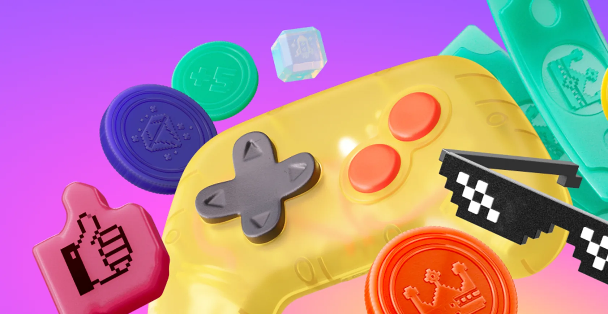
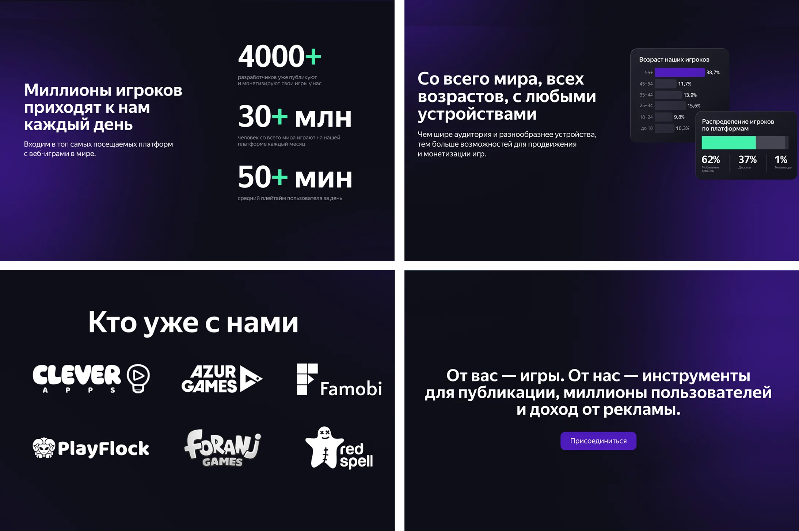
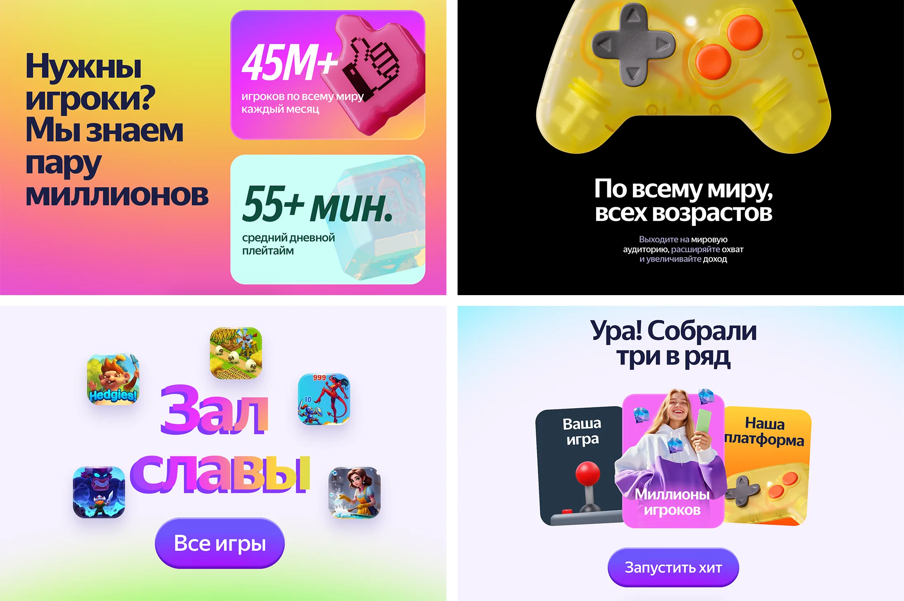
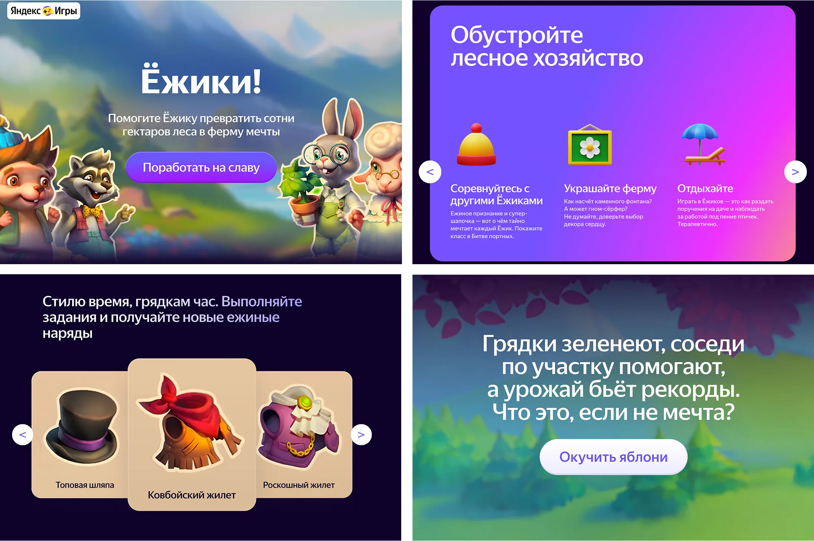
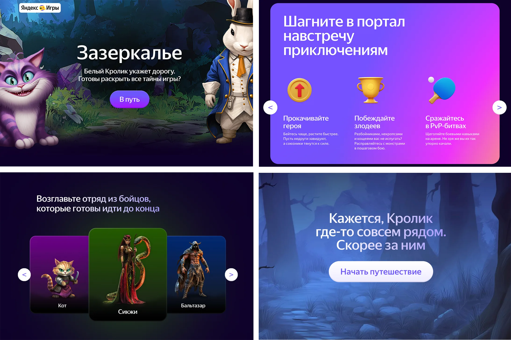
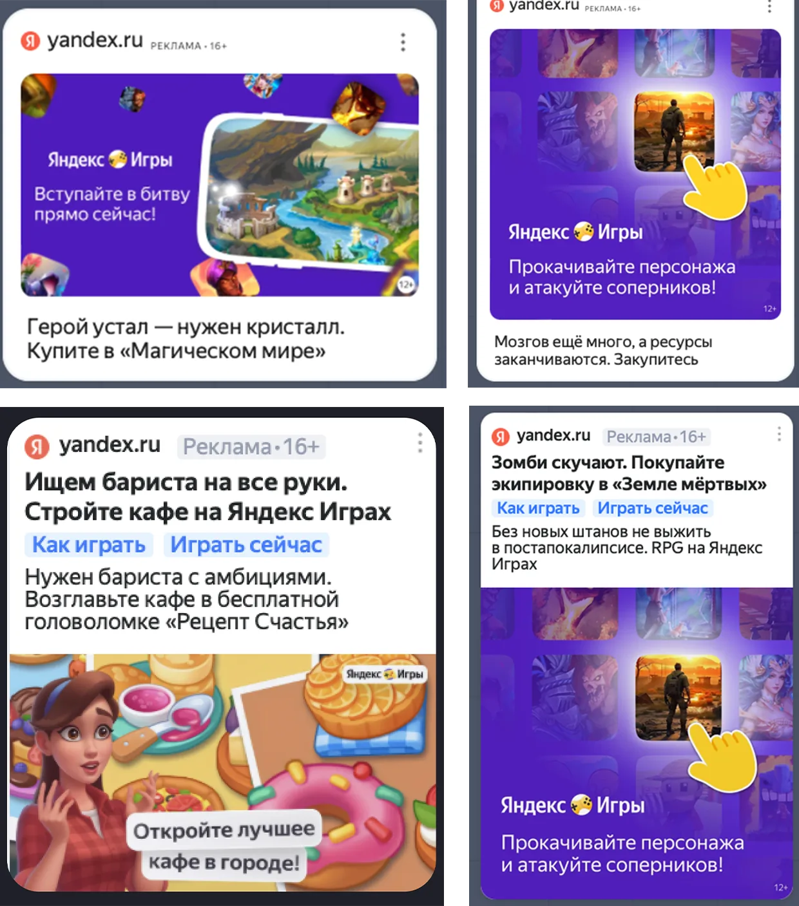

Яндекс Игры — сервис быстрых веб-игр, который помогает людям отдохнуть и развлечься. В текстах я старался передать настроение Игр, вызвать улыбку там, где уместно. Много работал с лендингами: продумывал структуру, писал живые и запоминающиеся тексты
Результаты:
Задача
Обновить промо-лендинг под новое, более яркое позиционирование платформы
Что сделал
Упростил тексты на русском и английском языке, добавил эмоций и ассоциаций: «зал славы», «три в ряд»


Задача
Написать тексты для промо Игр в узбекском приложении Яндекс Go
Что сделал
Взял инсайт: пользователь скучает, пока ждёт такси или доставку. Обыграл его цепляющими заголовками и объяснил идею спокойными подзаголовками.
Задача
Продумать структуру лендингов для топовых игр и написать тексты
Что сделал
Представил, будто перед нами не простые браузерные игры, а масштабные ААА-тайтлы. Соединил лёгкий пафос заголовков с ироничными подзаголовками и кнопками


Результаты:
Задача
Увеличить число покупок в играх и вернуть игроков
Что сделал
Бросил вызов баннерной слепоте. К стандартным триггерам вроде упущенной выгоды добавил юмор и немного абсурда, чтобы зацепить
